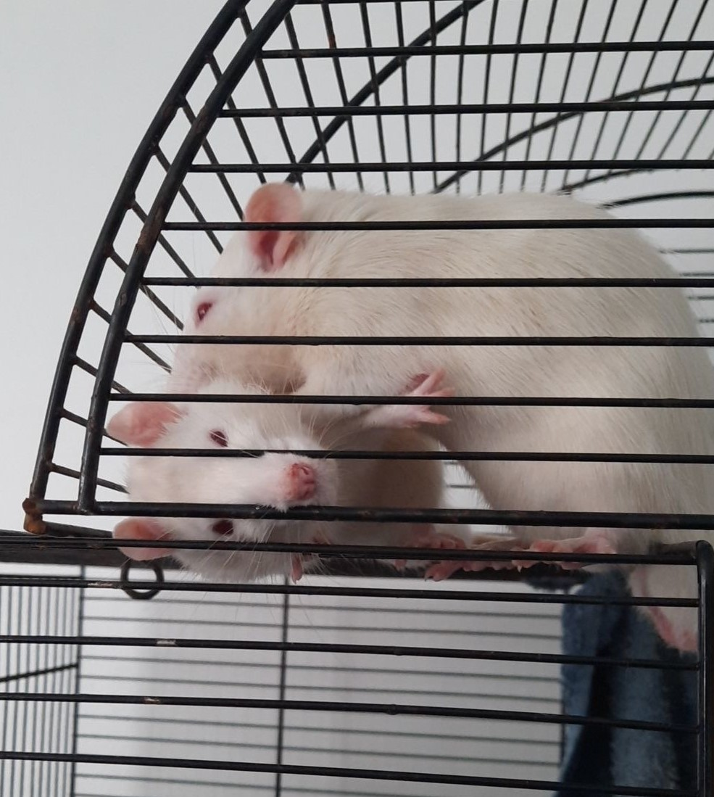
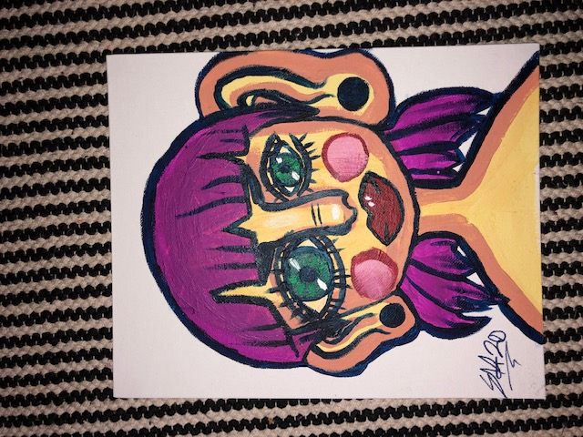
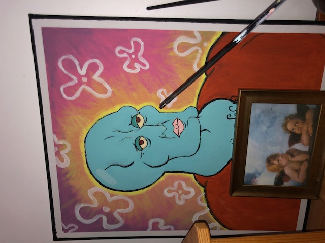

Hei! olen Siiri Hänninen olen syntynyt 7.11.2003 ja opiskelen Tieto ja Viestintätekniikkaa Etelä-Savon ammattiopistossa. Omistan koiran, kaksi kania ja kaksi kesyrottaa.
Minulla on aika niukasti harrastuksia mutta tykkään käydä skeittaamassa poikaystäväni kanssa. Olen myös piirtänyt ja maalannut koko ikäni. Pelaan myös aika useasti
Olen ollut kesätöissä vain kerran Tokmannilla. Myös kaikki top ja tet paikkani ovat olleet Tokmannilla ja kukkakaupassa